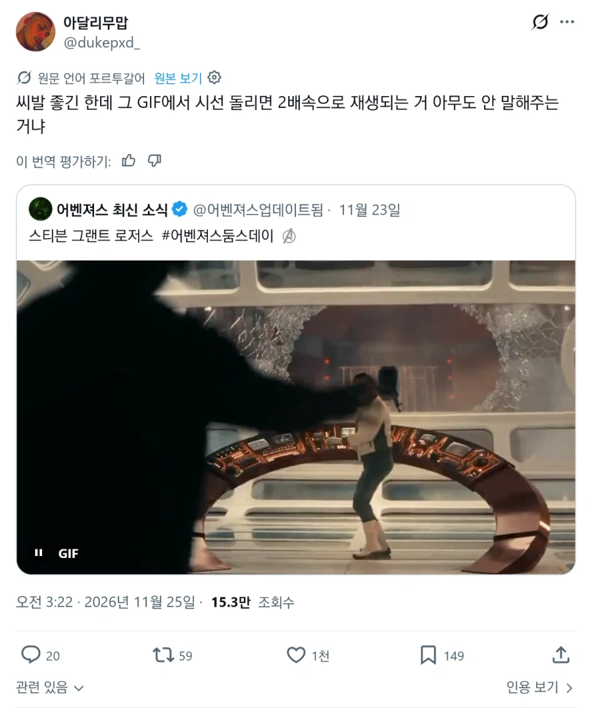

뇌가 시각 정보를 채워넣는 주변시 현상으로 일어난다는게 중론
https://x.com/AvengersUpdated/status/2124873770158440839?a=_Qtp1ghjwWYkZiKs4NE&s=19
+ 개드립은 반복 재생이 안되어서 재현이 어려운 사람은
원본 링크에서 보는거 추천.
어려우면 화면 약간 가리셈.

뇌가 시각 정보를 채워넣는 주변시 현상으로 일어난다는게 중론
https://x.com/AvengersUpdated/status/2124873770158440839?a=_Qtp1ghjwWYkZiKs4NE&s=19
+ 개드립은 반복 재생이 안되어서 재현이 어려운 사람은
원본 링크에서 보는거 추천.
어려우면 화면 약간 가리셈.
아디 아픈가?
뭔소리지 시선을 영상 옆으로두구 곁눈질마냥 보면 빨리 흘러가는것처럼 보인다고?
ㅇㅇㅇ 고개 비스듬히 돌리고 눈동자가 영상을 향하는게 아니라 빗겨가게 해서 주변시로 보면 빠르게 재생되는 것처럼 되긴 하네 ㅋㅋㅋㅋ
근데 한번 하고나니까 계속 빠르게 보이는데
프레임 건너뛰기네
시간 팽창 착각(Time Dilation Illusion)
위협 및 접근 자극(Looming Effect) : 무언가 나에게 빠르게 다가올 때(예: 날아오는 공, 다가오는 차) 멀어질 때보다 시간이 더 길게 느껴집니다. 뇌가 생존을 위해 위협 대상에 주의를 집중하면서 더 많은 정보를 처리하기 때문입니다.
이미 연구를 해봤네
그러니까 내가 주로 보고 있지 않은 주변시에서 뭔가가 움직이면 그걸 더 위협적으로 생각해서
더 빠르게 인식한다는 건가보네
반대야
니 관심 밖의 영역에서 움직이는 거 쓱 지나가는건 상관 없는데 니한테 날아오는 건 너에게 위협적으로 느껴 더 많은 처리를 하고 상대적으로 느리게 보인다는 뜻.
아 죽음 직전의 주마등처럼 천천히 느낀다는거구나
진짜네
아 그러네
x맨퀵실버투입떡밥 ㄷㄷ
전혀 안그러는데.. 이 글을 읽고 망치 던지고 받는 리듬을 숙지하고 봐서 그런가
받는 속도가 아니라 망치가 날아오는 속도를 생각하고 봐보셈.

오씨 왜 빨라지지?
오 그러네 좀 그런느낌든다 곁눈질로 보면 휙 하고 지나가는데 똑바로보면 휘익 하고 가는느낌이네
오뭔가신기해
근데 영상 문제가 아니면 꼭 저 화면이 아니어도 상관없는거 아닌가?
집중해서 보면 우웅착 하는데 주변시로 보면 웅착 하네
오
진짜 건너뛰네 ㅋㅋㅋㅋㅋㅋㅋㅋㅋ
리드리차드 지나서 돌아올때 프레임이 생략되네
이게 바로 상대성이론?
전혀 모르겠네. 걍 박자 딱딱맞는데
오 신기
이왜진 ㅋㅋ
우리가 보는 것은 실제로 보는것이 아니고 뇌가 해석해준것을 보는것
정면으로 보면 슈우욱 착인데
측면에서 보면 슉 챡이긴 하네 ㅋㅋㅋㅋ
개신기하네 ㅋㅋㅋ
직접 보면 뇌가 위험을 감지해서 좀 더 정밀하게
보는건가??
날아오는게 안 보이니까 순간이동한거 같이 빠르긴하네
ㅗ...
돌아올때 속도가 빨라보인다는거지?
옆으로 보고 흘겨보고 도리도리 해봐도 똑같은데 내 뇌는 좆된건가
그냥 시선 옆으로 돌리면 망치 날아오는 중간과정이 잘 안 보여서 그런 것 아닌가 싶은데...
마지막에 망치 나타나는 건 비껴나간 시선으로도 확 들어오니까
정면으로 보면 그 날아오는 과정이 다 보이니까
시간 팽창 착각(Time Dilation Illusion)
위협 및 접근 자극(Looming Effect) : 무언가 나에게 빠르게 다가올 때(예: 날아오는 공, 다가오는 차) 멀어질 때보다 시간이 더 길게 느껴집니다. 뇌가 생존을 위해 위협 대상에 주의를 집중하면서 더 많은 정보를 처리하기 때문입니다.
그렇게 안 느껴지니까 적는 말이야
순간적으로 시간이 느려진 것처럼 보이는 건 게임하다가도 접전하면 느껴지는 현상이라서 특이할 건 없는 거고
가끔 노래 비트도 빠르거나 느리게 느껴질 때 있던데
? 뭐지 이왜진
실제로 아니란건 알지만 그렇게 보이는게 신기하네ㅎㅎ
저거 안되는 친구들은 병원가면 됨
별개로 정확히 바라보고 있지 않은 주변의 흐릿한 부분은 정보 들어오는게 늦게 반영됨
이거 그거아님?
지하철 정면 영상을 가장자리 자르고 보면 지하철이 엄청 천천히 움직이는것 같이 느껴지는 그거
오 신기하다
리처드쪽이 확 지나가네 ㄷㄷ
이거 옛날에 십 몇 년에 인터넷에서도 읽었던 거 같은데 돌고 도는 건가 😺ㅋㅋ
오 원본들어가서 보니까 진짜 되네 ㄷㄷ
어떻게하는건데